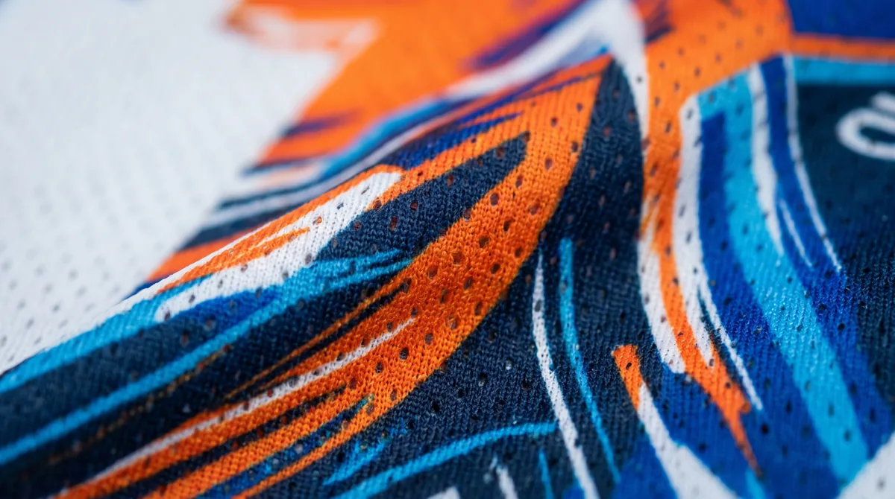

Bahan memengaruhi kenyamanan, tampilan cetak, dan karakter jersey saat dipakai berolahraga. Artikel ini membahas aspek yang perlu diperiksa agar keputusan Anda lebih tepat, baik untuk seragam komunitas, tim olahraga, sekolah, maupun kebutuhan acara.
Dalam memilih layanan jersey printing, sebaiknya pertimbangkan bukan hanya tampilan desain, tetapi juga fungsi bahan, ketepatan ukuran, dan kesiapan data pesanan. Untuk gambaran menyeluruh, baca panduan printing jersey Bandung.
Dryfit bukan satu jenis kain tunggal
Istilah dryfit sering dipakai untuk berbagai kain olahraga berbahan sintetis dengan struktur rajut berbeda. Karena itu, jangan memilih hanya dari nama dagang; periksa komposisi, ketebalan, elastisitas, dan rasa di kulit.
Untuk memperjelas keputusan sebelum produksi, lihat juga cara menilai kualitas jersey printing. Informasi tersebut membantu menyesuaikan pilihan dengan kebutuhan tim dan kesiapan pesanan.
Mengenal microfiber dan interlock
Microfiber merujuk pada karakter serat yang sangat halus, sementara interlock merupakan struktur rajut. Keduanya bukan kategori yang selalu saling menggantikan. Sebuah kain dapat memiliki lebih dari satu karakter tersebut.

Jika ingin memeriksa detail yang berkaitan, baca cara merawat jersey printing. Informasi tersebut membantu menyesuaikan pilihan dengan kebutuhan tim dan kesiapan pesanan.
Cara mengevaluasi sampel bahan
Bandingkan kelenturan, sirkulasi udara, berat kain, transparansi saat diregangkan, dan tampilan warna setelah dicetak. Untuk jersey tim, pastikan spesifikasi bahan konsisten pada seluruh ukuran.
Sebagai langkah lanjutan yang praktis, gunakan panduan panduan ukuran jersey custom. Informasi tersebut membantu menyesuaikan pilihan dengan kebutuhan tim dan kesiapan pesanan.
Memilih bahan berdasarkan aktivitas
Badminton dan olahraga indoor
Prioritaskan bahan yang ringan, mudah mengikuti gerakan bahu, serta nyaman ketika pemain sering mengangkat tangan. Jangan hanya menilai dari nama kain: minta sampel dan coba gerakan servis, smash, serta peregangan.
Untuk penerapan pada pesanan tim, bandingkan kondisi nyata dengan contoh atau sampel sebelum mengambil keputusan. Catat spesifikasi yang disepakati agar penanggung jawab dan pihak produksi memiliki acuan yang sama. Jika ada ketidakpastian, minta klarifikasi sebelum tahap produksi dimulai.
Futsal dan sepak bola
Periksa ketahanan terhadap gesekan, kelembapan, dan frekuensi pencucian. Bahan yang terasa sangat tipis mungkin nyaman pada awalnya tetapi belum tentu cocok untuk pemakaian intensif.
Komunitas dan kegiatan luar ruang
Perhatikan kondisi cuaca, durasi pemakaian, dan apakah jersey akan digunakan berjam-jam. Pilih keseimbangan antara bobot, ventilasi, ketebalan, dan tampilan warna.
Cara membandingkan dua sampel kain
Uji sentuhan dan regangan
Letakkan dua sampel pada kondisi sama. Raba permukaan bagian dalam, tarik secara wajar ke dua arah, lalu lihat apakah kain kembali ke bentuk semula. Bandingkan kenyamanan, bukan hanya kelenturan maksimum.
Untuk penerapan pada pesanan tim, bandingkan kondisi nyata dengan contoh atau sampel sebelum mengambil keputusan. Catat spesifikasi yang disepakati agar penanggung jawab dan pihak produksi memiliki acuan yang sama. Jika ada ketidakpastian, minta klarifikasi sebelum tahap produksi dimulai.
Periksa transparansi dan jahitan
Bentangkan sampel di depan cahaya dan amati transparansinya. Perhatikan apakah konstruksi rajut memungkinkan jahitan yang stabil di bahu, kerah, dan sisi badan.
Minta contoh hasil sublimasi
Warna pada layar tidak selalu identik dengan warna di kain. Jika ketepatan warna penting, mintalah contoh cetak pada bahan yang benar-benar akan diproduksi.
Kesalahan yang perlu dihindari
Menyamakan microfiber dengan jenis rajutan
Microfiber menjelaskan karakter serat, sedangkan interlock menjelaskan konstruksi rajut. Memperlakukan keduanya sebagai pilihan yang saling meniadakan bisa membuat perbandingan bahan keliru.
Memilih berdasarkan harga per meter saja
Perhitungkan kebutuhan pemakaian, kenyamanan, daya tahan, dan kesesuaian dengan proses printing. Bahan lebih murah belum tentu paling ekonomis jika hasilnya tidak sesuai kebutuhan tim.
Langkah praktis sebelum menentukan pilihan
Gunakan panduan ini sebagai titik awal, lalu sesuaikan dengan aktivitas, anggaran, kebutuhan desain, dan jumlah anggota tim. Jika terdapat spesifikasi khusus, komunikasikan sejak awal agar solusi yang ditawarkan tidak hanya terlihat menarik di gambar tetapi juga sesuai saat digunakan.
Untuk kebutuhan produksi di Bandung, pelajari juga panduan printing jersey Bandung yang menjelaskan pilihan bahan, teknik sublimasi, serta alur pemesanan. Anda juga dapat mengenal layanan jersey printing dari Zipzip dan mendiskusikan detail proyek secara langsung.
Uji bahan sebelum menyetujui produksi
Minta potongan sampel dari pilihan kain yang benar-benar akan dipakai. Raba permukaan luar dan dalam, lalu periksa apakah kain terasa panas ketika dilipat atau ditempelkan sebentar pada kulit. Bandingkan juga elastisitas melintang dan memanjang; dua kain dengan nama dagang serupa dapat memiliki karakter yang berbeda.
Untuk jersey pertandingan yang banyak bergerak, prioritaskan kenyamanan, bobot, dan kemampuan mengelola keringat. Untuk seragam acara, pertimbangkan pula kerapian tampilan, ketebalan, dan daya tahan saat dicuci berulang. Jangan menganggap semua dryfit memiliki komposisi atau performa identik.
Mintalah konfirmasi jenis kain, gramasi bila tersedia, warna dasar, dan sampel cetak pada bahan yang dipilih. Hasil warna di layar dapat berbeda dengan kain fisik; dokumentasikan persetujuan sampel sebelum produksi massal.
Untuk membandingkan pilihan secara menyeluruh, baca panduan printing jersey Bandung dan lihat layanan jersey printing Zipzip.
Membedakan nama pasar dan spesifikasi bahan
Istilah dryfit sering menjadi sebutan umum untuk kain jersey olahraga, bukan standar teknis tunggal. Dua kain yang sama-sama dijual sebagai dryfit bisa berbeda pada berat, rajutan, kelembutan, dan daya regang. Karena itu, saat meminta penawaran, jangan berhenti pada nama bahan. Mintalah foto close-up, komposisi jika tersedia, berat kain atau contoh fisik, serta rekomendasi pemakaian. Spesifikasi yang jelas membantu membandingkan dua vendor secara adil dan menghindari perubahan bahan tanpa persetujuan.
Apa arti gramasi bagi pemakai jersey
Gramasi menggambarkan massa kain per luas tertentu, tetapi tidak langsung menentukan kualitas. Kain lebih ringan bisa terasa nyaman untuk olahraga intensif, namun perlu diperiksa tingkat transparansi dan daya tahannya. Kain lebih berat bisa memberi kesan kokoh tetapi berpotensi terasa hangat pada kondisi tertentu. Rajutan dan finishing juga memengaruhi sensasi pemakaian, jadi angka gramasi tidak boleh dibaca sendirian. Jika tim bermain di lapangan panas, lakukan uji coba sampel saat bergerak, bukan hanya menilai kain dengan meraba di toko.
Peran rajutan dalam sirkulasi udara
Kain olahraga dapat memiliki struktur pori atau tekstur rajut yang berbeda. Pori yang terlihat besar tidak otomatis berarti kain paling nyaman, karena pengelolaan keringat dipengaruhi sifat serat, struktur kain, dan kondisi pemakaian. Pada olahraga dengan banyak gerakan, periksa apakah kain mengikuti gerak bahu dan badan tanpa menarik jahitan. Bandingkan dua sampel dengan ukuran yang sama dan gunakan di lingkungan yang mendekati aktivitas sebenarnya. Catat rasa panas, berat setelah berkeringat, dan kenyamanan di kulit.
Microfiber dan interlock bukan dua kategori sejajar
Microfiber biasanya merujuk pada serat berukuran halus, sedangkan interlock merujuk pada konstruksi rajutan. Satu kain dapat memakai serat halus sekaligus struktur rajut tertentu. Karena itu, pertanyaan “lebih bagus microfiber atau interlock” belum cukup spesifik. Tanyakan material, struktur, ketebalan, dan tujuan pemakaian yang ditawarkan. Untuk desain printing, pastikan vendor menggunakan bahan yang cocok dengan teknik pewarnaan yang dipilih. Kecocokan hasil cetak dan kenyamanan harus diuji bersama.
Menilai warna dasar dan tingkat tembus pandang
Kain putih atau berwarna terang sering dipilih untuk printing sublimasi karena memberi ruang bagi warna desain. Namun kain terang yang terlalu tipis dapat terlihat menerawang ketika diregangkan atau basah. Pegang sampel di depan sumber cahaya, lalu uji di atas latar gelap dan terang. Perhatikan pula apakah permukaan kain berubah tampak saat diregangkan. Untuk seragam tim, kenyamanan dan kepantasan saat dipakai sama pentingnya dengan warna yang terlihat tajam pada foto katalog.
Memeriksa elastisitas dan pemulihan bentuk
Tarik kain secara wajar ke arah lebar dan panjang, lalu lihat apakah kembali mendekati bentuk semula. Kain yang elastis tetapi lambat pulih dapat terasa melar setelah dipakai berulang kali. Perhatikan juga apakah motif cetak berubah saat diregangkan dan apakah jahitan sampel mengikuti gerakan. Pengujian sederhana ini tidak menggantikan uji laboratorium, tetapi berguna saat memilih di antara beberapa opsi bahan. Untuk jersey olahraga aktif, prioritaskan keseimbangan gerak, rasa di kulit, dan kestabilan bentuk.
Sampel cetak lebih penting daripada katalog digital
Foto produk tidak selalu memperlihatkan tekstur atau perbedaan warna nyata. Mintalah potongan bahan yang sudah melalui proses printing, idealnya menggunakan warna dan detail yang mirip desain pesanan. Bandingkan area solid, garis tipis, dan gradasi. Periksa apakah warna terlihat merata, apakah detail masih terbaca, serta apakah kain berubah rasa setelah proses panas. Jika tersedia dua bahan dengan harga berbeda, buat keputusan berdasarkan perbandingan sampel, bukan hanya selisih harga. Lihat juga indikator kualitas hasil jersey.
Pertanyaan penting sebelum memilih bahan
Pastikan jenis aktivitas, intensitas gerak, lokasi penggunaan, model potongan, dan frekuensi pencucian sudah diketahui. Tanyakan kepada vendor bahan mana yang paling cocok untuk kebutuhan tersebut dan apa komprominya. Jangan memaksakan satu bahan untuk semua anggota jika kebutuhan sangat berbeda; misalnya, jersey pertandingan dan jersey santai mungkin memerlukan karakter berbeda. Dokumentasikan pilihan bahan final bersama ukuran, desain, dan warna dasar agar tidak terjadi salah tafsir ketika pesanan masuk tahap produksi.
Pertanyaan yang sering muncul
Membedakan nama pasar dan spesifikasi bahan?
Istilah dryfit sering menjadi sebutan umum untuk kain jersey olahraga, bukan standar teknis tunggal. Dua kain yang sama-sama dijual sebagai dryfit bisa berbeda pada berat, rajutan, kelembutan, dan daya regang.
Apa arti gramasi bagi pemakai jersey?
Gramasi menggambarkan massa kain per luas tertentu, tetapi tidak langsung menentukan kualitas. Kain lebih ringan bisa terasa nyaman untuk olahraga intensif, namun perlu diperiksa tingkat transparansi dan daya tahannya.
Peran rajutan dalam sirkulasi udara?
Kain olahraga dapat memiliki struktur pori atau tekstur rajut yang berbeda. Pori yang terlihat besar tidak otomatis berarti kain paling nyaman, karena pengelolaan keringat dipengaruhi sifat serat, struktur kain, dan kondisi pemakaian.
Artikel terkait yang dapat membantu
- Apa Itu Printing Jersey Sublimasi? Cara Kerja dan Keunggulannya
- Cara Menentukan Ukuran Jersey Custom untuk Tim agar Tidak Salah
- Printing Jersey Bandung
Masih ada pertanyaan tentang spesifikasi atau kebutuhan tim? Hubungi Zipzip untuk membahas opsi yang sesuai dengan desain dan jadwal Anda.
Bacaan lanjutan untuk perencanaan jersey
Tahap berikutnya bisa dipelajari melalui panduan yang saling melengkapi berikut.